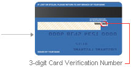

What is a Card Verification Value (CVV)?

The Card Verification Value (CVV) is a 3-digit number found on the signature panel on the back of your credit card following the printed Card number.
Copyright © 2016 Financial Software & Systems Pvt. Ltd. All Rights Reserved.